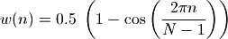
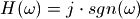
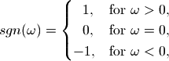
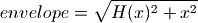
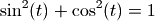

频域信号处理¶
用FFT(快速傅立叶变换)能将时域的数字信号转换为频域信号。转换为频域信号之后我们可以很方便地分析出信号的频率成分，在频域上进行处理，最终还可以将处理完毕的频域信号通过IFFT(逆变换)转换为时域信号，实现许多在时域无法完成的信号处理算法。本章通过几个实例，简单地介绍有关频域信号处理的一些基本知识。
观察信号的频谱¶
将时域信号通过FFT转换为频域信号之后，将其各个频率分量的幅值绘制成图，可以很直观地观察信号的频谱。下面的程序完成这一任务：
# -*- coding: utf-8 -*-
import numpy as np
import pylab as pl
sampling_rate = 8000
fft_size = 512
t = np.arange(0, 1.0, 1.0/sampling_rate)
x = np.sin(2*np.pi*156.25*t) + 2*np.sin(2*np.pi*234.375*t)
xs = x[:fft_size]
xf = np.fft.rfft(xs)/fft_size
freqs = np.linspace(0, sampling_rate/2, fft_size/2+1)
xfp = 20*np.log10(np.clip(np.abs(xf), 1e-20, 1e100))
pl.figure(figsize=(8,4))
pl.subplot(211)
pl.plot(t[:fft_size], xs)
pl.xlabel(u"时间(秒)")
pl.title(u"156.25Hz和234.375Hz的波形和频谱")
pl.subplot(212)
pl.plot(freqs, xfp)
pl.xlabel(u"频率(Hz)")
pl.subplots_adjust(hspace=0.4)
pl.show()
下面逐行对这个程序进行解释：
首先定义了两个常数：sampling_rate, fft_size，分别表示数字信号的取样频率和FFT的长度。
然后调用np.arange产生1秒钟的取样时间，t中的每个数值直接表示取样点的时间，因此其间隔为取样周期1/sampline_rate：
t = np.arange(0, 1.0, 1.0/sampling_rate)
用取样时间数组t可以很方便地调用函数计算出波形数据，这里计算的是两个正弦波的叠加，一个频率是156.25Hz，一个是234.375Hz：
x = np.sin(2*np.pi*156.25*t) + 2*np.sin(2*np.pi*234.375*t)
为什么选择这两个奇怪的频率呢？因为这两个频率的正弦波在512个取样点中正好有整数个周期。满足这个条件波形的FFT结果能够精确地反映其频谱。
N点FFT能精确计算的频率
假设取样频率为fs, 取波形中的N个数据进行FFT变换。那么这N点数据包含整数个周期的波形时，FFT所计算的结果是精确的。于是能精确计算的波形的周期是: n*fs/N。对于8kHz取样，512点FFT来说，8000/512.0 = 15.625Hz，前面的156.25Hz和234.375Hz正好是其10倍和15倍。
下面从波形数据x中截取fft_size个点进行fft计算。np.fft库中提供了一个rfft函数，它方便我们对实数信号进行FFT计算。根据FFT计算公式，为了正确显示波形能量，还需要将rfft函数的结果除以fft_size：
xs = x[:fft_size]
xf = np.fft.rfft(xs)/fft_size
rfft函数的返回值是N/2+1个复数，分别表示从0(Hz)到sampling_rate/2(Hz)的N/2+1点频率的成分。于是可以通过下面的np.linspace计算出返回值中每个下标对应的真正的频率：
freqs = np.linspace(0, sampling_rate/2, fft_size/2+1)
最后我们计算每个频率分量的幅值，并通过 20*np.log10() 将其转换为以db单位的值。为了防止0幅值的成分造成log10无法计算，我们调用np.clip对xf的幅值进行上下限处理：
xfp = 20*np.log10(np.clip(np.abs(xf), 1e-20, 1e100))
剩下的程序就是将时域波形和频域波形绘制出来，这里就不再详细叙述了。此程序的输出为：
使用FFT计算正弦波的频谱
如果你放大其频谱中的两个峰值的部分的话，可以看到其值分别为：
>>> xfp[10]
-6.0205999132796251
>>> xfp[15]
-9.6432746655328714e-16
即156.25Hz的成分为-6dB， 而234.375Hz的成分为0dB，与波形的计算公式中的各个分量的能量(振幅值/2)符合。
如果我们波形不能在fft_size个取样中形成整数个周期的话会怎样呢？
将波形计算公式修改为：
x = np.sin(2*np.pi*200*t) + 2*np.sin(2*np.pi*300*t)
得到的结果如下：
非完整周期的正弦波经过FFT变换之后出现频谱泄漏
这次得到的频谱不再是两个完美的峰值，而是两个峰值频率周围的频率都有能量。这显然和两个正弦波的叠加波形的频谱有区别。本来应该属于200Hz和300Hz的能量分散到了周围的频率中，这个现象被称为频谱泄漏。出现频谱泄漏的原因在于fft_size个取样点无法放下整数个200Hz和300Hz的波形。
频谱泄漏的解释
我们只能在有限的时间段中对信号进行测量，无法知道在测量范围之外的信号是怎样的。因此只能对测量范围之外的信号进行假设。而傅立叶变换的假设很简单：测量范围之外的信号是所测量到的信号的重复。
现在考虑512点FFT，从信号中取出的512个数据就是FFT的测量范围，它计算的是这512个数据一直重复的波形的频谱。显然如果512个数据包含整数个周期的话，那么得到的结果就是原始信号的频谱，而如果不是整数周期的话，得到的频谱就是如下波形的频谱，这里假设对50Hz的正弦波进行512点FFT：
>>> t = np.arange(0, 1.0, 1.0/8000)
>>> x = np.sin(2*np.pi*50*t)[:512]
>>> pl.plot(np.hstack([x,x,x]))
>>> pl.show()
50Hz正弦波的512点FFT所计算的频谱的实际波形
由于这个波形的前后不是连续的，出现波形跳变，而跳变处的有着非常广泛的频谱，因此FFT的结果中出现频谱泄漏。
窗函数¶
为了减少FFT所截取的数据段前后的跳变，可以对数据先乘以一个窗函数，使得其前后数据能平滑过渡。例如常用的hann窗函数的定义如下：

其中N为窗函数的点数，下面是一个512点hann窗的曲线：
>>> import pylab as pl
>>> import scipy.signal as signal
>>> pl.figure(figsize=(8,3))
>>> pl.plot(signal.hann(512))
hann窗函数
窗函数都在scipy.signal库中定义，它们的第一个参数为点数N。可以看出hann窗函数是完全对称的，也就是说第0点和第511点的值完全相同，都为0。在这样的函数和信号数据相乘的话，结果中会出现前后两个连续的0，这样FFT的结果所表示的周期信号中有两个连续的0值，会对信号的周期性有一定的影响。
计算周期信号的一个周期的数据
考虑对一个正弦波取样10个点，那么第一个点的值为0，而最后一个点的值不应该是0，这样这10个数据的重复才能是精确的正弦波，下面的两种计算中，前者是正确的：
>>> np.sin(np.arange(0, 2*np.pi, 2*np.pi/10))
array([ 0.00000000e+00, 5.87785252e-01, 9.51056516e-01,
9.51056516e-01, 5.87785252e-01, 1.22464680e-16,
-5.87785252e-01, -9.51056516e-01, -9.51056516e-01,
-5.87785252e-01])
>>> np.sin(np.linspace(0, 2*np.pi, 10))
array([ 0.00000000e+00, 6.42787610e-01, 9.84807753e-01,
8.66025404e-01, 3.42020143e-01, -3.42020143e-01,
-8.66025404e-01, -9.84807753e-01, -6.42787610e-01,
-2.44929360e-16])
为了解决连续0值的问题，hann函数提供了一个sym关键字参数，如果设置其为0的话，那么将产生一个N+1点的hann窗函数，然后取其前N个数，这样得到的窗函数适合于周期信号：
>>> signal.hann(8)
array([ 0. , 0.1882551 , 0.61126047, 0.95048443, 0.95048443,
0.61126047, 0.1882551 , 0. ])
>>> signal.hann(8, sym=0)
array([ 0. , 0.14644661, 0.5 , 0.85355339, 1. ,
0.85355339, 0.5 , 0.14644661])
50Hz正弦波与窗函数乘积之后的重复波形如下：
>>> t = np.arange(0, 1.0, 1.0/8000)
>>> x = np.sin(2*np.pi*50*t)[:512] * signal.hann(512, sym=0)
>>> pl.plot(np.hstack([x,x,x]))
>>> pl.show()
加hann窗的50Hz正弦波的512点FFT所计算的实际波形
回到前面的例子，将200Hz, 300Hz的叠加波形与hann窗乘积之后再计算其频谱，得到如下频谱图：
加hann窗前后的频谱，hann窗能降低频谱泄漏
可以看到与hann窗乘积之后的信号的频谱能量更加集中于200Hz和300Hz，但是其能量有所降低。这是因为hann窗本身有一定的能量衰减：
>>> np.sum(signal.hann(512, sym=0))/512
0.5
因此如果需要严格保持信号的能量的话，还需要在乘以hann窗之后再乘以2。
上面完整绘图程序请参照： 频谱泄漏和hann窗
频谱平均¶
对于频谱特性不随时间变化的信号，例如引擎、压缩机等机器噪声，可以对其进行长时间的采样，然后分段进行FFT计算，最后对每个频率分量的幅值求其平均值可以准确地测量信号的频谱。
下面的程序完成这一计算：
import numpy as np
import scipy.signal as signal
import pylab as pl
def average_fft(x, fft_size):
n = len(x) // fft_size * fft_size
tmp = x[:n].reshape(-1, fft_size)
tmp *= signal.hann(fft_size, sym=0)
xf = np.abs(np.fft.rfft(tmp)/fft_size)
avgf = np.average(xf, axis=0)
return 20*np.log10(avgf)
average_fft(x, fft_size)对数组x进行fft_size点FFT运算，以dB为单位返回其平均后的幅值。由于x的长度可能不是fft_size的整数倍，因此首先将其缩短为fft_size的整数倍，然后用reshape函数将其转换为一个二维数组tmp。tmp的第1轴的长度为fft_size：
n = len(x) // fft_size * fft_size
tmp = x[:n].reshape(-1, fft_size)
然后将tmp的第1轴上的数据和窗函数相乘，这里选用的是hann窗：
tmp *= signal.hann(fft_size, sym=0)
调用rfft对tmp每的行数据进行FFT计算，并求其幅值：
xf = np.abs(np.fft.rfft(tmp)/fft_size)
接下来调用average函数对xf沿着第0轴进行平均，这样就得到每个频率分量的平均幅值：
avgf = np.average(xf, axis=0)
下面是利用averagge_fft函数计算随机数序列频谱的例子：
>>> x = np.random.rand(100000) - 0.5
>>> xf = average_fft(x, 512)
>>> pl.plot(xf)
>>> pl.show()
白色噪声的频谱接近水平直线(注意Y轴的范围)
我们可以看到随机噪声的频谱接近一条水平的直线，也就是说每个频率窗口的能量都相同，这种噪声我们称之为白色噪声。
如果我们利用scipy.signal库中的滤波器设计函数，设计一个IIR低通滤波器，将白色噪声输入到此低通滤波器，绘制其输出数据的平均频谱的话，就能够观察到IIR滤波器的频率响应特性，下面的程序利用iirdesign设计一个8kHz取样的1kHz的 Chebyshev I 型低通滤波器，iirdesign函数需要用正规化的频率(取值范围为0-1)，然后调用filtfilt对白色噪声信号x进行低通滤波：
>>> b,a=signal.iirdesign(1000/4000.0, 1100/4000.0, 1, -40, 0, "cheby1")
>>> x = np.random.rand(100000) - 0.5
>>> y = signal.filtfilt(b, a, x)
如果用average_fft计算输出信号y的平均频谱，得到如下频谱图：
经过低通滤波器的白色噪声的频谱
快速卷积¶
我们知道，信号x经过系统h之后的输出y是x和h的卷积，虽然卷积的计算方法很简单，但是当x和h都很长的时候，卷积计算是非常耗费时间的。因此对于比较长的系统h，需要找到比直接计算卷积更快的方法。
信号系统理论中有这样一个规律：时域的卷积等于频域的乘积，因此要计算时域的卷积，可以将时域信号转换为频域信号，进行乘积运算之后再将结果转换为时域信号，实现快速卷积。
由于FFT运算可以高效地将时域信号转换为频域信号，其运算的复杂度为 O(N*log(N))，因此三次FFT运算加一次乘积运算的总复杂度仍然为 O(N*log(N)) 级别，而卷积运算的复杂度为 O(N*N)，显然通过FFT计算卷积要比直接计算快速得多。这里假设需要卷积的两个信号的长度都为N。
但是有一个问题：FFT运算假设其所计算的信号为周期信号，因此通过上述方法计算出的结果实际上是两个信号的循环卷积，而不是线性卷积。为了用FFT计算线性卷积，需要对信号进行补零扩展，使得其长度长于线性卷积结果的长度。
例如，如果我们要计算数组a和b的卷积，a和b的长度都为128，那么它们的卷积结果的长度为 len(a) + len(b) - 1 = 257。为了用FFT能够计算其线性卷积，需要将a和b都扩展到256。下面的程序演示这个计算过程：
# -*- coding: utf-8 -*-
import numpy as np
def fft_convolve(a,b):
n = len(a)+len(b)-1
N = 2**(int(np.log2(n))+1)
A = np.fft.fft(a, N)
B = np.fft.fft(b, N)
return np.fft.ifft(A*B)[:n]
if __name__ == "__main__":
a = np.random.rand(128)
b = np.random.rand(128)
c = np.convolve(a,b)
print np.sum(np.abs(c - fft_convolve(a,b)))
此程序的输出为直接卷积和FFT快速卷积的结果之间的误差，大约为5e-12左右。
在这段程序中，a,b的长度为128，其卷积结果c的长度为n=255，我们通过下面的算式找到大于n的最小的2的整数次幂：
N = 2**(int(np.log2(n))+1)
在调用fft函数对其进行变换时，传递第二个参数为N(FFT的长度)，这样fft函数将自动对a,b进行补零。最后通过ifft得到的卷积结果c2的长度为N，比实际的卷积结果c要多出一个数，这个多出来的元素应该接近于0，请读者自行验证。
下面测试一下速度：
>>> import timeit
>>> setup="""import numpy as np
a=np.random.rand(10000)
b=np.random.rand(10000)
from spectrum_fft_convolve import fft_convolve"""
>>> timeit.timeit("np.convolve(a,b)",setup, number=10)
1.852900578146091
>>> timeit.timeit("fft_convolve(a,b)",setup, number=10)
0.19475575806416145
显然计算两个很长的数组的卷积，FFT快速卷积要比直接卷积快很多。但是对于较短的数组，直接卷积运算将更快一些。下图显示了直接卷积和快速卷积的每点的平均计算时间和长度之间的关系：

用FFT计算卷积和直接卷积的时间复杂度比较
由于图中的Y轴表示每点的计算时间，因此对于直接卷积它是线性的：O(N*N)/N。我们看到对于1024点以上的计算，快速卷积显示出明显的优势。
具体的程序请参照 FFT卷积的速度比较
由于FFT卷积很常用，因此scipy.signal库中提供了fftconvolve函数，此函数采用FFT运算可以计算多维数组的卷积。读者也可以参照此函数的源代码帮助理解。
分段运算¶
现在考虑对于输入信号x和系统响应h的卷积运算，通常x是非常长的，例如要对某段录音进行滤波处理，假设取样频率为8kHz，录音长度为1分钟的话，那么x的长度为480000。而且x的长度也可能不是固定的，例如我们可能需要对麦克风的连续输入信号进行滤波处理。而h的长度通常都是固定的，例如它是某个房间的冲击响应，或者是某种FIR滤波器。
根据前面的介绍，为了有效地利用FFT计算卷积，我们希望它的两个输入长度相当，于是就需要对信号x进行分段处理。对卷积的分段运算被称作：overlap-add运算。
overlap-add的计算方法如下图所示：
分段卷积的过程演示
原始信号x长度为300，将它分为三段，分别与滤波器系数h进行卷积计算，h的长度为101，因此每段输出200个数据，图中用绿色标出每段输出的200个数据。这3段数据按照时间顺序进行求和之后得到结果和原始信号的卷积是相同的。
因此将持续的输入信号x和滤波器h进行卷积的运算可以按照如下步骤进行，假设h的长度为M：
- 建立一个缓存，其大小为N+M-1，初始值为0
- 每次从x中读取N个数据，和h进行卷积，得到N+M-1个数据，和缓存中的数据进行求和，并放进缓存中，然后输出缓存前N个数据
- 将缓存中的数据向左移动N个元素，也就是让缓存中的第N个元素成为第0个元素，后面的N个元素全部设置为0
- 跳转到2重复运行
下面是实现这一算法的演示程序：
# -*- coding: utf-8 -*-
import numpy as np
x = np.random.rand(1000)
h = np.random.rand(101)
y = np.convolve(x, h)
N = 50 # 分段大小
M = len(h) # 滤波器长度
output = []
#缓存初始化为0
buffer = np.zeros(M+N-1,dtype=np.float64)
for i in xrange(len(x)/N):
#从输入信号中读取N个数据
xslice = x[i*N:(i+1)*N]
#计算卷积
yslice = np.convolve(xslice, h)
#将卷积的结果加入到缓冲中
buffer += yslice
#输出缓存中的前N个数据，注意使用copy，否则输出的是buffer的一个视图
output.append( buffer[:N].copy() )
#缓存中的数据左移动N个元素
buffer[0:M-1] = buffer[N:]
#后面的补0
buffer[M-1:] = 0
#将输出的数据组合为数组
y2 = np.hstack(output)
#计算和直接卷积的结果之间的误差
print np.sum(np.abs( y2 - y[:len(x)] ) )
注意第23行需要输出缓存前N个数据的拷贝，否则输出的是数组的一个视图，当此后buffer更新时，视图中的数据会一起更新。
将FFT快速卷积和overlap-add相结合，可以制作出一些快速的实时数据滤波算法。但是由于FFT卷积对于两个长度相当的数组时最为有效，因此在分段时也会有所限制：例如如果滤波器的长度为2048，那么理想的分段长度也为2048，如果将分段长度设置得过低，反而会增加运算量。因此在实时性要求很强的系统中，只能采用直接卷积。
Hilbert变换¶
Hilbert变换能在振幅保持不变的情况下将输入信号的相角偏移90度，简单地说就是能将正弦波形转换为余弦波形，下面的程序验证这一特性：
# -*- coding: utf-8 -*-
from scipy import fftpack
import numpy as np
import matplotlib.pyplot as pl
# 产生1024点4个周期的正弦波
t = np.linspace(0, 8*np.pi, 1024, endpoint=False)
x = np.sin(t)
# 进行Hilbert变换
y = fftpack.hilbert(x)
pl.plot(x, label=u"原始波形")
pl.plot(y, label=u"Hilbert转换后的波形")
pl.legend()
pl.show()
关于程序的几点说明：
- hilbert转换函数在scipy.fftpack函数库中
- 为了生成完美的正弦波，需要计算整数个周期，因此调用linspace时指定endpoint=False，这样就不会包括区间的结束点：8*np.pi
此程序的输出图表如下，我们可以很清楚地看出hilbert将正弦波变换为了余弦波形。
Hilbert变换将正弦波变为余弦波
Hilbert正变换的相角偏移符号
本书中将相角偏移+90度成为Hilbert正变换。有的文献书籍正好将定义倒转过来：将偏移+90度成为Hilbert负变换，而偏移-90度成为Hilbert正变换。
相角偏移90度相当于复数平面上的点与虚数单位1j相乘，因此Hilbert变换的频率响应可以用如下公式给出：

其中  为圆频率，sgn函数为符号函数，即：
为圆频率，sgn函数为符号函数，即：

我们可以将其频率响应理解为：
- 直流分量为0
- 正频率成分偏移+90度
- 负频率成分偏移-90度
由于对于实数信号来说，正负频率成分共轭，因此对实数信号进行Hilbert变换之后仍然是实数信号。下面的程序验证Hilbert变换的频率响应：
>>> x = np.random.rand(16)
>>> y = fftpack.hilbert(x)
>>> X = np.fft.fft(x)
>>> Y = np.fft.fft(y)
>>> np.imag(Y/X)
array([ 0., 1., 1., 1., 1., 1., 1., 1.,
0., -1., -1., -1., -1., -1., -1., -1.])
对信号进行N点FFT变换之后：
- 下标为0的频率分量表示直流分量
- 下标为N/2的的频率分量为取样频率/2的频率分量
- 1到N/2-1为正频率分量
- N/2+1到N为负频率分量
对照Y/X的虚数部分，不难看出它是符合Hilbert的频率响应的。如果你用np.real(Y/X)观察实数部分的话，它们全部接近于0。
Hilbert变换可以用作包络检波。具体算法如下所示：

其中x为原始载波波形，H(x)为x的Hilbert变换之后的波形，envelope为信号x的包络。其原理很容易理解：假设x为正弦波，那么H(x)为余弦波，根据公式：

可知envelope恒等于1，为sin(t)信号的包络。下面的程序验证这一算法：
# -*- coding: utf-8 -*-
import numpy as np
import pylab as pl
from scipy import fftpack
t = np.arange(0, 0.3, 1/20000.0)
x = np.sin(2*np.pi*1000*t) * (np.sin(2*np.pi*10*t) + np.sin(2*np.pi*7*t) + 3.0)
hx = fftpack.hilbert(x)
pl.plot(x, label=u"载波信号")
pl.plot(np.sqrt(x**2 + hx**2), "r", linewidth=2, label=u"检出的包络信号")
pl.title(u"使用Hilbert变换进行包络检波")
pl.legend()
pl.show()
使用Hilbert变换对载波信号进行包络检波
前面介绍过可以使用频率扫描波形测量滤波器的频率响应，我们可以使用这个算法计算出扫描波的包络：
>>> run filter_lfilter_example01.py # 运行滤波器的例子
>>> hy = fftpack.hilbert(y)
>>> pl.plot( np.sqrt(y**2 + hy**2),"r", linewidth=2)
>>> pl.plot(y)
>>> pl.title(u"频率扫描波的包络")
>>> pl.show()
得到的包络波形如下图所示：
使用Hilbert变换对频率扫描波进行包络检波
可以看出在高频和低频处包络计算出现较大的误差。而在中频部分能很好地计算出包络的形状。